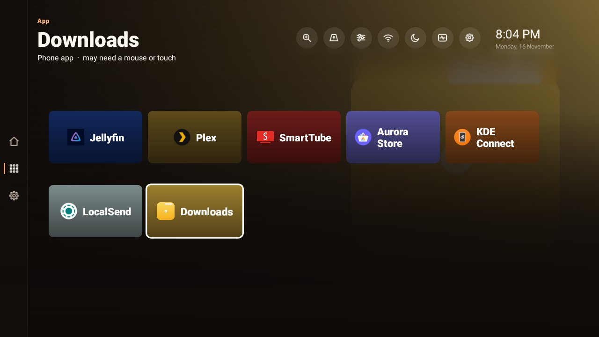
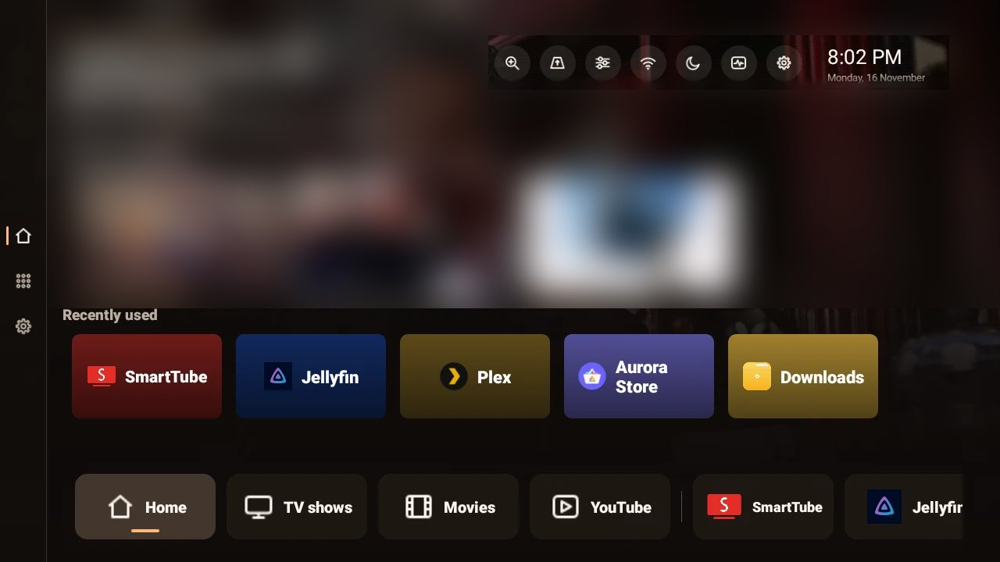

Projector system rebuild / Engineering notes
An old projector, a new system
Replacing an abandoned Android 4.4 system with my own Android 7.1 build, working with cloud and local AI agents.
Personal project · November 2026 · private repository

View full size ↗- System
- Android 4.4 → 7.1
- Commits, 11–16 Nov 2026
- 529
- Requests confirmed on the device
- 61 of 100
- Map
- Build
- Test
- Install
In short
Problem: a working projector locked to a system its maker no longer updates. Built: a replacement Android 7.1 system on the original kernel, with my own TV launcher and settings. Result: 61 of 100 tracked requests confirmed on the device, smoother drawing than the factory system, and 5 GHz Wi-Fi the factory system never used.
The problem
The projector is an ARMv7 device from the Android 4.4 years. Its maker stopped updating it, the system is locked, and current versions of apps such as YouTube and Jellyfin no longer run on it. The lamp, lens and speakers still work well, so the hardware deserved a better system.
Map the factory system first
Before changing anything I documented how the factory system drives the display, the remote keys, power, the focus motor and Wi-Fi. That map became the reference for every feature. One finding: the Wi-Fi chip supports the 5 GHz band, but the factory system never switched it on. The new system uses 5 GHz by default.
A new system on the original kernel
The replacement is an Android 7.1 system that boots on the unchanged factory boot image and kernel. On top of it I wrote a TV launcher, a settings app and a top bar, all driven by the remote. The interface draws with the GPU and runs more smoothly than the factory system. YouTube, Jellyfin and Plex run, and the home screen shows what to continue watching from my home server.


View full size ↗Cloud agents and a local model, working as one team
This was my first project that combined a team of cloud AI agents with a local model on my own machine. The cloud agents planned, wrote and reviewed code. A local Qwen model took bounded jobs: reading the source files I named, extracting facts and writing first drafts. The local worker had no tools and could not touch the projector, and every answer was checked against the source before use; several confident answers turned out to be wrong. Used this way, the local model saved a large share of cloud tokens.
Only “seen on the projector” counts as done
Every request sits on a board with four states: built, seen in the emulator, seen on the projector, or dropped. On 16 November 2026, 61 of 100 requests were confirmed on the projector. Tests run on my computer before any system image is built. Every install needs a backup and my explicit go-ahead, and an automatic rollback restores the previous system after a failed boot. It has done that three times.
What is not finished, and what I would do differently
Bluetooth does not work yet, and picture controls such as keystone are built but not yet confirmed on the device. If I started again, I would write the hardware map and the device checklist before the first build. I wrote them after the first failed installs, and most of the working rules in the repository come from those mistakes.
Sources & project context
A personal project on a projector I own. The repository is private and holds only my own code, tests and notes: no factory firmware, vendor software or device identifiers. The manufacturer is not named here on purpose. A walkthrough is available on request.
- Android (AOSP)
- Java
- C
- Python
- ARM
- Reverse engineering
- Local LLM